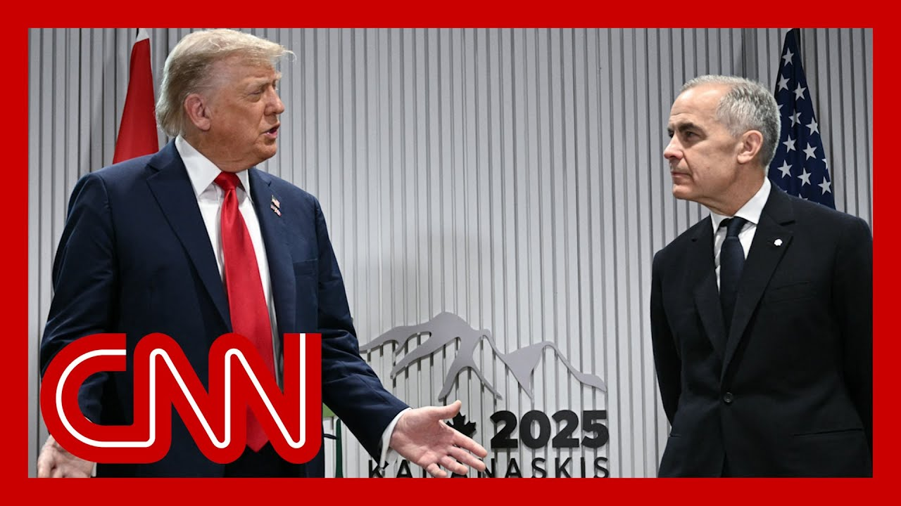

【特朗普抨击G7将俄罗斯逐出】
Summary: President Trump's focus on defending Russia and revisiting its expulsion from the G8, rather than current issues like trade or the Middle East, has sparked astonishment. Critics argue Russia's exclusion was justified due to its actions in Ukraine and Crimea, and its lack of democratic values. Meanwhile, Trump's refusal to sign a G7 statement on de-escalating the Iran-Israel conflict highlights divisions within the group, with the U.S. now diverging from traditional allies on trade, security, and ideology.
摘要： 特朗普总统为俄罗斯辩护并重提其被逐出G8的举动（而非关注贸易或中东等当前议题）引发震惊。批评者认为俄罗斯因在乌克兰和克里米亚的行动及缺乏民主价值观而被合理排除。同时，特朗普拒绝签署G7关于缓和伊朗-以色列冲突的声明，凸显了集团内部分歧，美国如今在贸易、安全和意识形态上与传统盟友分道扬镳。

⏱️ Estimated Reading Time: 19 min
📚 六级生词 📚 雅思生词 📚 托福生词 📚 专八生词 📚 SAT生词 📚 考研生词 📚 GRE生词 📚 高考生词
U.S. President Donald Trump is meeting right now with Canadian Prime Minister Mark Carney on the sidelines of the G7 summit in Alberta.
美国总统唐纳德·特朗普正在阿尔伯塔省G7峰会间隙与加拿大总理马克·卡尼会晤。
This video is actually from moments ago.
这段视频实际上是刚刚拍摄的。
Let's listen in.
让我们听听。
What's up?
怎么了？
All right.
好的。
Thank you.
谢谢。
Mr. President, welcome to Canada.
总统先生，欢迎来到加拿大。
Thank you.
谢谢。
It's a great honor.
非常荣幸。
Happy birthday.
生日快乐。
short and a few days short, but, didn't have a chance to see you on the on the day, happy birthday to the U.S. military, as well, 250th.
虽然晚了几天，但没能在当天见到您，祝美国军队250岁生日快乐。
And, and this is, the 50th birthday, if you will, of the G-7.
这也是G7的50岁生日。
this marks the 50th birthday of the G7.
这标志着G7成立50周年。
And, the G7 is nothing without U.S. leadership.
没有美国的领导，G7什么都不是。
And so and your personal leadership and leadership, the United States, many issues, geopolitics, economic technology, and working hand-in-hand with the United States, Canada, the United States, and, the other G7 partners, with your leadership, very much looking forward to meeting the great have here.
您的个人领导力及美国在诸多问题上的领导作用——地缘政治、经济科技等——加拿大、美国及其他G7伙伴在您的领导下携手合作，非常期待此次重要会晤。
I, I appreciate it.
我很感激。
And we've developed a very good relationship and we're going to be talking about trade and many other things.
我们建立了良好关系，将讨论贸易等议题。
And we have a whole group of people, some traders and some other people.
我们有一整个团队，包括贸易专家等。
I see my top economy people, but we have, a very talented group of people, and you do too.
我看到了经济团队精英，你们也有优秀人才。
And I know they've worked together very well.
我知道他们合作得很好。
I look forward to that.
我期待这次会晤。
The G7 used to be the G8, Barack Obama.
G7曾是G8，奥巴马时期。
And, a person named Trudeau didn't want to have Russia in.
特鲁多当时拒绝俄罗斯加入。
And I would say that that was a mistake, because I think you would have a war right now if you had Russia and and you wouldn't have a war right now if Trump were president, four years ago.
我认为这是错误，若特朗普四年前执政且俄罗斯在G8，当前战争或可避免。
But it didn't work out that way.
但事与愿违。
But it used to be the G8.
但它曾是G8。
And now it's, I guess, what's that? Nine years ago, eight years ago, it switched over there.
如今约八九年前已改变。
They, threw Russia out, which I claimed was a very big mistake, even though I wasn't in politics then.
他们将俄罗斯逐出，我认为是重大错误，尽管我当时未从政。
I was very loud about it.
我曾强烈反对。
It was a mistake in that you spend so much time talking about Russia.
错误在于如今需耗费大量时间讨论俄罗斯。
He's no longer at the table, so it makes life more complicated.
俄方缺席使局势更复杂。
But you wouldn't have had the war.
但本可避免战争。
and, other than that, I think we're going to accomplish a lot.
除此之外，我们将取得诸多成果。
And I expect to and I think our primary focus would be trade and trade with Canada, and I'm sure we can work something out.
主要聚焦对加贸易，相信能达成协议。
Yeah.
是的。
Thank you so much.
非常感谢。
Mr. president, Mr. president.
总统先生。
President, I to say what is holding up a deal with Canada from your perspective?
请问美加协议的主要障碍是什么？
it's not so much holding up.
并非实质障碍。
I think we have different concepts.
双方理念不同。
I have a tariff concept.
我主张关税措施。
Mark has a different concept, which is something that some people like.
马克提出不同方案，部分人支持。
But, we're going to see if we can get to the bottom of it today.
今日将深入探讨。
I'm a, I'm a tariff person.
我是关税派。
I've always been a tariff.
一贯如此。
Simple.
简单直接。
It's easy, it's precise, and it just goes very quickly.
高效精准。
And I think Mark has a more complex idea, but also very good.
马克的方案更复杂但也很优秀。
So we're going to look at both.
我们将评估两者。
And we're going to see what we're going to come out with.
最终确定方案。
Something that helps deal the deal is achievable within days within weeks.
协议或于数日/周内达成。
Is there that kind of runway?
时间是否充裕？
Yeah.
是的。
It's achievable.
可以实现。
Both parties have to agree.
需双方同意。
Yeah, sure.
当然。
Mr. president, have you seen it?
总统先生是否注意到？
Have you heard any signals or seen any messages from intermediaries that Iran wishes to de-escalate the conflict?
是否有伊朗愿降级的信号？
Yeah.
有的。
What what have you heard?
具体内容？
What have you heard from the Iranians?
伊朗方面消息？
They'd like to talk, but they should have done that before.
他们愿谈判，但应更早行动。
I had 60 days and they had 60 days.
双方曾有60天窗口期。
And under 61st day.
第61天时。
As we don't have a deal, they have to make a deal.
未达成协议则需重新协商。
And, it's painful for both parties.
这对双方都艰难。
But I'd say Iran is, not winning this war.
但伊朗未占上风。
And they should talk, and they should talk immediately before it's too late.
应立即谈判以免为时已晚。
And what would you say, in your opinion, what would it take for the U.S to get involved in this conflict militarily?
美国军事介入的条件？
I don't want to talk about that.
不予置评。
And you mentioned Putin.
您提到普京。
Do you think that he should have a seat at the G7 today, that it should be the G8?
他是否应重返G7（恢复G8）？
I'm not saying he should at this point because too much water has gone over the dam.
目前不宜因时过境迁。
Maybe.
或许可以。
But, it was a big mistake.
但当初是重大错误。
Obama didn't want them and the, head of your country, the proud head of your country, didn't want him.
奥巴马与贵国领导人当时拒绝。
This was a big mistake.
这很错误。
You wouldn't have that war.
本可避免战争。
You know, you have your enemy at the table.
让对手参与对话。
Even I don't even consider him.
我甚至不视他为敌。
He wasn't really an enemy at that time.
当时并非敌人。
There was no concept.
无此概念。
If I were president, this war would have never happened.
若我执政战争不会发生。
But likewise, if he were a member of that, what was called the G8 at that time, it was always the G8.
同理若他当时仍在G8。
you would have a war right now.
当前战争或可避免。
Why not using your intelligence support?
为何不提供情报支持？
Are you providing Israel?
是否支援以色列？
we've always supported Israel.
我们一贯支持以色列。
We have for a long period of time.
长期如此。
Strongly.
坚定支持。
And Israel is doing very well right now.
以色列目前表现良好。
What's.
什么？
Your biggest economy?
贵国最大经济体？
The world after the United States.
美国之后的世界。
Well, it's not a bad idea.
这主意不错。
I don't buy that.
我不认同。
If somebody wants to see just China coming in, I think we suggest.
若有人只想让中国加入需谨慎。
But you want to have people that you can talk to, you know, they they don't talk.
但需可对话对象。
Putin speaks to me.
普京与我对话。
He doesn't speak to anybody else.
他不与他人交流。
He doesn't want to talk because he was very insulted when he got thrown out of the G8, as I would be, as you would be, as anybody would be, is very insulted.
他因被逐出G8受辱而不愿交谈——换作任何人都会如此。
And I mean, he was thrown out by Trudeau, who consists of 1 or 2 people, along with Obama.
他被特鲁多与奥巴马联手逐出。
He was thrown out and he's, not a happy person about it, I can tell you that.
他对此极为不满。
You you didn't even speak to the people that are on that.
你们未与相关方沟通。
And I agree with him.
我认同他的观点。
I was going to go ahead on immigration.
我将讨论移民问题。
Why are you ordering Ice to target Democratic inner cities?
为何命令ICE针对民主党城市？
What's behind that?
有何目的？
I don't know what you say.
我不明白你的问题。
You did a post last night where you said you want ice to really target Democrats.
您昨夜发文要求ICE重点针对民主党。
I want them to focus on the cities because the cities are where you really have what you call sanctuary cities, and that's where the people are.
因城市中存在所谓"庇护城市"及大量移民。
I look at New York, I look at Chicago, I mean, you got a really bad governor in Chicago and a bad mayor, so no questions.
纽约、芝加哥等地官员表现糟糕。
But the governor is probably the worst in the country.
州长或是全美最差。
Pritzker but I look at how that city has been overrun by criminals and, you know, New York and LA.
普利兹克任内城市被罪犯充斥，纽约、洛杉矶亦然。
Look at la la.
看看洛杉矶。
Those people weren't from LA.
那些人非本地居民。
They weren't from California.
非加州人。
Most of those people, many of those people.
其中多数人。
And yeah, that's, that's a focus.
这正是重点。
Biden allowed 21 million people to come into our country of that vast numbers of those people were murderers, killers, people from gangs, people from jails.
拜登放任2100万人入境，含大量罪犯。
They empty their jails out into the U.S. most of those people are in the cities, all blue cities, all Democrat run cities, and they think they're going to use them to vote.
他们将监狱清空输美，多数聚集于民主党城市，企图操纵选举。
It's not going to happen.
不会得逞。
All right, that's it.
好了，到此为止。
That's it.
就这样。
You don't mind?
您介意吗？
yes.
是的。
Just me to exercise my role.
请允许我履行职责。
Yes, if you will, as a G-7 chair.
以G7主席身份。
Since, we have a few more minutes with the president and his team.
我们尚有几分钟与总统团队交流。
and then we actually have to start the meeting to address some of these big issues.
之后需正式开会讨论重大议题。
Well, thank you, thank you, thank you, President Trump.
非常感谢特朗普总统。
They're meeting one awkward moment.
会谈中出现尴尬时刻。
Another awkward moment.
又一尴尬时刻。
The fact that the Canadian prime minister wanted to end the Q&A with reporters, it was beginning to feel uncomfortable.
加总理欲结束记者问答环节显局促。
Clearly, for him, it certainly was.
他显然感到不适。
you saw them standing right there in sort of an awkward fashion.
可见其站立姿态僵硬。
Kristen Holmes, who is live in Calgary as the president, talked about a range of issues, particularly the escalation between Iran and Israel, saying that Iran, in his view, is not winning this war.
记者克里斯汀·霍姆斯在卡尔加里报道总统谈及伊朗与以色列冲突，称伊朗未占上风。
Kristen.
克里斯汀。
That's right.
是的。
And I think this is the biggest news out of what we just heard was all of what Donald Trump said about Iran, the war.
特朗普关于伊朗与战争的言论是重点。
He also said that his administration has heard from Iranian, intermediaries that say they want to de-escalate.
他表示伊朗中间人传达降级意愿。
That is something that we have been hearing that they want to come to the table.
我们持续关注其谈判意向。
He said that they should have done this already.
他称伊朗应更早行动。
they should make a deal.
应达成协议。
He said that they aren't winning the war.
伊朗未赢得战争。
He obviously said again that he supports Israel.
他重申支持以色列。
No, he wouldn't answer a question for what it would take for the United States to ramp up their involvement.
但拒绝回答美方加大介入的条件。
He has been incredibly wary about getting involved in this.
他对介入冲突极为谨慎。
We know that the United States is involved in deflecting, and protecting Israel from missiles right now.
目前美国协助以色列拦截导弹。
But beyond that, what would it take to get the United States involved?
但进一步行动需满足何条件？
He would not answer that question.
他未予回应。
I do just want to point out one thing that we all just took away from that was that the Prime Minister learned his lesson from the last time he had this kind of interaction with Donald Trump, where it went completely off the rails.
值得注意的是，加总理吸取了上次与特朗普会谈失控的教训。
The longer that Donald Trump took questions, the more aggressive it got, the more tense that Carney got in that meeting in the Oval Office.
此前问答环节越长，特朗普言辞越激烈，卡尼在椭圆办公室越紧张。
Here.
此次。
He set the boundaries.
他设定了边界。
He set the timeline.
控制了时间。
And you saw the president there.
可见总统表现。
He would have continued to take questions.
他本会继续回答问题。
Carney stepping in to say, we're moving forward now.
卡尼介入称需推进议程。
We need to finish our conversations, the behind the scenes.
需结束私下对话。
Remember, one of the things we've seen with Donald Trump in these meetings with world leaders is his ability to really put this front and center, usually and historically, with the white House meeting with any other head of state, you have something like this where you have these pleasantries, exchanged a couple questions, and then it's over.
特朗普惯于将此类会晤公开化，与传统白宫礼节性会谈不同。
Donald Trump has been opening up these meetings to the public with the cameras.
他常允许摄像公开会议。
And you can tell Carney here wanted to shut that off.
而卡尼试图终止公开环节。
And just one thing I just have to quickly note we used so much of his time during this Q&A talking about Russia and how Russia should be part of a G8, saying Putin wasn't over, that, saying that if he had been in the G8, he would have never brought the war.
需快速指出：问答环节大量时间讨论俄罗斯应重返G8，称若普京在G8战争或可避免。
He spent an enormous amount of time focused on why Russia should still be part of the G8.
他极力主张俄罗斯留在G8。
Obviously, he's not G7 now.
尽管俄现非G7成员。
but that was just kind of interesting, given the fact that the two of them were sitting there talking about all these other things trade, the war, Iran, all of that.
有趣的是双方本应讨论贸易、伊朗等议题。
And it was notable, too, because he said that the war wouldn't be going on with Russia and Ukraine had they been kicked out, in his view.
他声称若俄未被逐出G8，俄乌战争或可避免。
But of course, the reason Russia was kicked out of the then G8, now G7, was because of its invasion of Crimea.
但俄当初因吞并克里米亚被逐。
Kristen Holmes, thank you very much.
非常感谢克里斯汀·霍姆斯。
We're going to continue to watch the G7 summit.
我们将继续关注G7峰会。
But joining us right now is the former U.S. ambassador to NATO, Ivo Daalder.
现在连线前美国驻北约大使伊沃·达尔德。
Ivo, thanks so much for joining us.
伊沃，感谢参与。
First of all, what did you make of President Trump's comments that we just heard?
首先，你如何看待我们刚才听到的特朗普总统的评论？
Well, I was, flabbergasted, frankly, that he would start off his comments, not about trade, not about the Middle East, but about Russia and the G8.
坦白说，我感到震惊，他竟以俄罗斯和G8而非贸易或中东开启话题。
as you just noted, Russia was thrown out of the G8 after they, started a war against Ukraine and annexed Crimea.
如你所言，俄罗斯是在对乌克兰发动战争并吞并克里米亚后被逐出G8的。
That's why Russia is not part of the G8.
这就是俄罗斯不属于G8的原因。
The G8, was for a while an organization that had Russia in it, but for 50 years has been an organization of the advanced democratic industrial states.
G8曾一度包含俄罗斯，但过去50年它本质上是先进民主工业国的组织。
Russia is not advanced.
俄罗斯并不先进。
It's not democratic and is, frankly, industrial only in a way that, is focused on making war rather than, helping the people of, of the country.
它不民主，且工业仅聚焦于制造战争而非造福国民。
So I'm really astonished that the president would spend any time going back over this old period and sort of defending his friend Vladimir Putin against, the leaders, of the G8, the G7, and focus on the issues that are there today as opposed to what was there ten years ago.
因此我对总统花时间翻旧账、为好友普京辩护而非关注当前议题深感惊讶。
Yeah. Good point.
是的，说得好。
We're learning that President Trump has yet to sign off on a draft statement calling on Iran and Israel to de-escalate the current conflict, something European leaders had hoped to reach a consensus on.
据悉特朗普尚未签署呼吁伊朗与以色列缓和当前冲突的声明草案——欧洲领袖曾希望就此达成共识。
What does this tell you about the dynamics already at play at this G7 summit?
这如何反映本届G7峰会的博弈态势？
Once this G7 really is a G6 plus one?
本次G7是否实为G6加一？
the six other countries, have a particular view about economic relations, security relations?
其余六国对经济关系、安全关系持有特定立场？
the, what is happening in Ukraine, what is happening in the Middle East?
包括乌克兰局势、中东局势？
It's a view that the United States, for a very long time, not only shared, but actually, exemplified, but under Donald Trump, we have a different foreign policy.
这是美国长期认同并引领的立场，但特朗普时代的外交政策已截然不同。
We have a different engagement in with the world.
我们与世界互动的方式已然改变。
We have different sense of uses set that, President Trump set that with regard to trade, where he says, I'm a tariff man.
特朗普总统在贸易上自称"关税人"，设定了不同的优先事项。
And and, Carney has a different view.
而卡尼持不同观点。
He's in favor of trade free trade in fact, which is what America used to be.
他事实上支持自由贸易——这曾是美国的传统。
So, I'm not surprised there's a disagreement on, on the Middle East as, frankly, a disagreement on Ukraine.
因此对中东和乌克兰问题的分歧并不令我意外。
There's a disagreement on trade.
贸易上存在分歧。
There's a disagreement even on political ideology with, many in the Trump administration arguing that, what is happening in Europe is it is a threat to Western civilization.
政治意识形态上也有分歧——特朗普政府多人认为欧洲局势威胁西方文明。
even at the same time that the United States deploys troops on the street, to deal with, with peaceful and and constitutionally protected free speech in the Free Assembly.
尽管美国同时派兵街头应对受宪法保护的和平集会与言论自由。
Ambassador Ivo Daalder, thanks very much for joining us.
伊沃·达尔德大使，非常感谢您的参与。